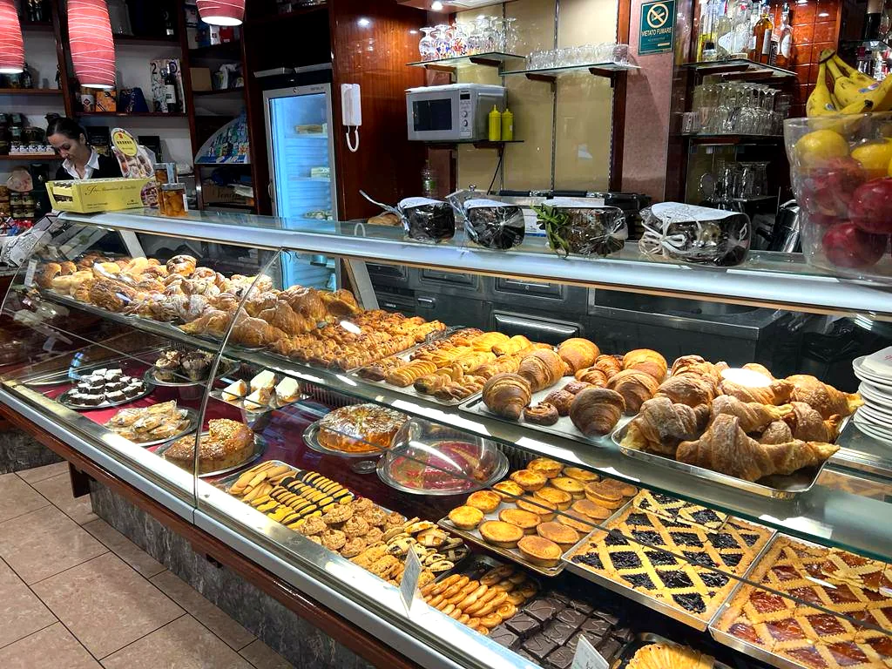
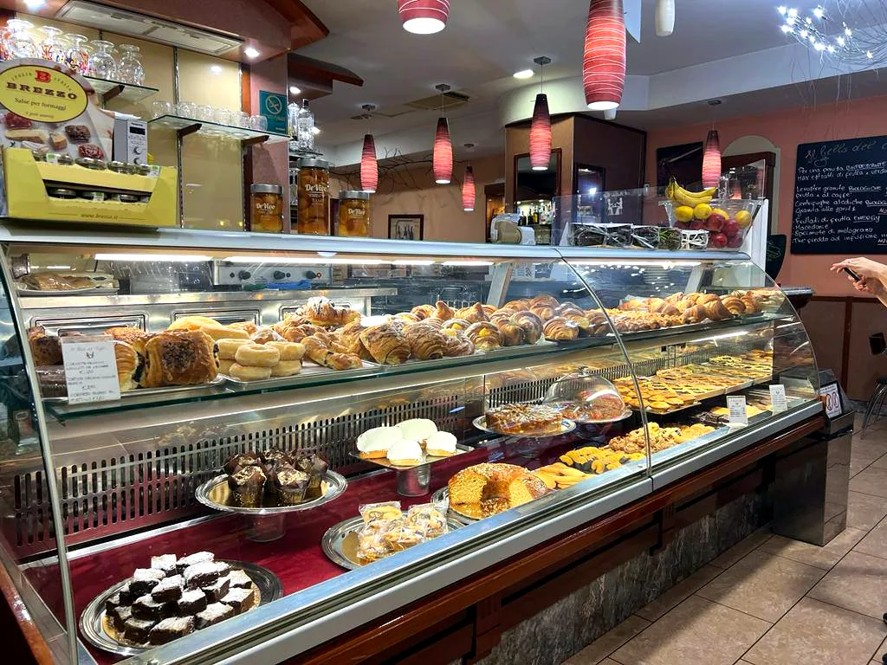
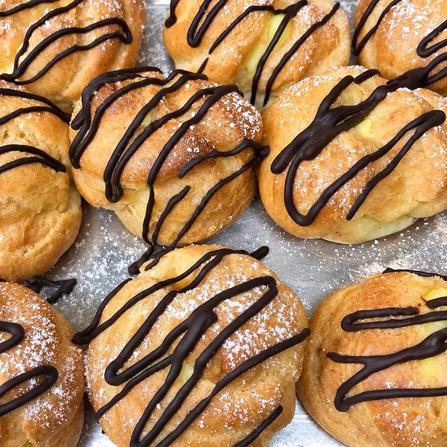
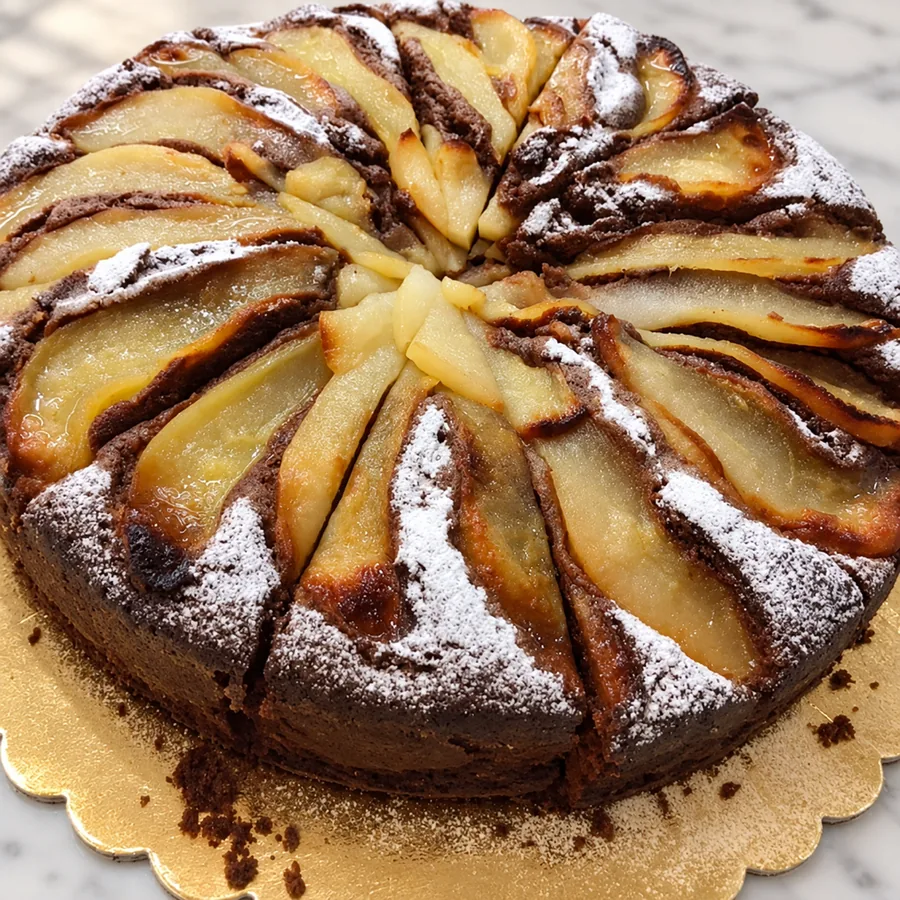
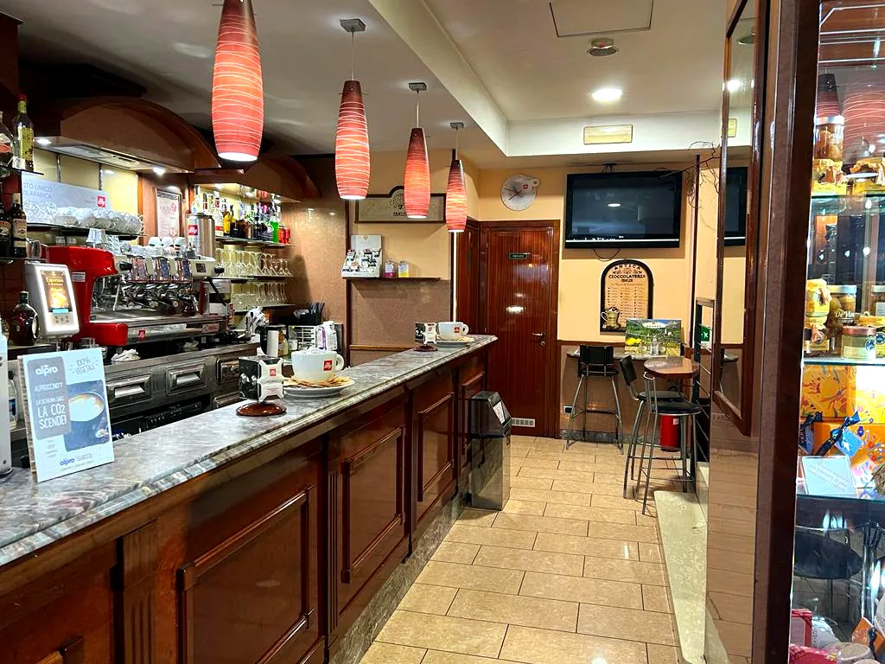

Colazione
Colazione a Ostiense – San Paolo
Cornetti home made, anche vegani e senza glutine, caffè Illy, spremute e centrifughe. Dalle 6:30, tutti i giorni.

Il banco del mattino
Cornetti home made, anche vegani e senza glutine
Al banco trovi cornetti home made, fagottini, tortine e crostate. C'è una vasta scelta di prodotti 100% vegan o senza glutine.
Per accompagnare: spremute e centrifughe, anche di melagrana.



Il caffè
Caffè Illy, rivenditori ufficiali
Usiamo la miscela Illy 100% Arabica, dal sapore vellutato e con una crema morbida.
Siamo rivenditori ufficiali Illy: da noi trovi anche macchine da caffè, tazzine, tè e cioccolato.

Domande frequenti
Domande frequenti
A che ora si può fare colazione?
Dalle 6:30 tutti i giorni, anche la domenica.
Passi oggi?
Ti aspettiamo in via Chiabrera 129, accanto al Cinema Madison.